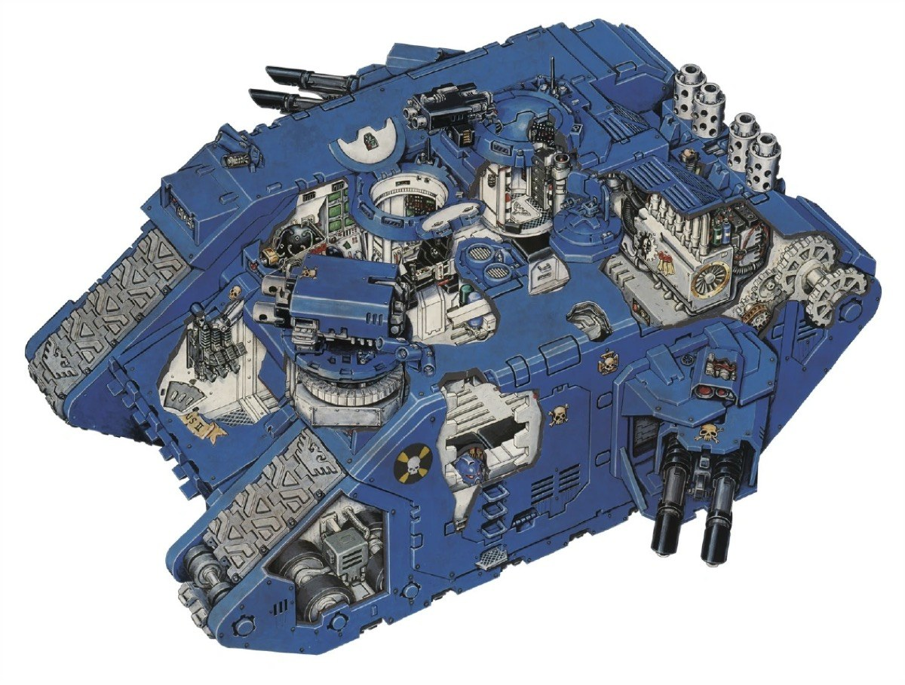

Land Raider
| Land Raider | |
|---|---|
 A Legion Land Raider Phobos of the World Eaters in action at Isstvan III, from a Legion battle plate of the Heresy era Artwork © Games Workshop | |
| Type | Heavy assault transport and main battle tank |
| Origin | Standard Template Construct recovered on Mars by Arkhan Land, late M30 |
| Users | Adeptus Astartes; Adeptus Custodes; Inquisition; Adeptus Mechanicus; the Traitor Legions |
| Armament (Phobos) | Twin heavy bolters; two sponsons of twin lascannons; pintle weapon |
| Capacity | Twelve Space Marines in power armour, or six in Terminator armour (Phobos) |
| Made at | Forge worlds, once chiefly Anvilus IX |
The Land Raider is the heavy assault transport of the Adeptus Astartes, the "armoured fist" of the Space Marines. It is a tracked vehicle of adamantium and ceramite armour that carries a squad into the thick of battle, protects it from all but the greatest weapons, and supports it with lascannons and heavy bolters. It is among the oldest and most prized machines of the Imperium, and its Machine Spirit is held to be the finest of any tank.[1][2]
The design comes from a Standard Template Construct found by the technoarchaeologist Arkhan Land in the ruins of the Librarius Omnis on Mars in the Great Crusade. The first pattern, the Proteus, was built in the late 30th millennium. Its descendants, the Phobos, Achilles, Crusader, Redeemer and others, are still used by Space Marine Chapters, the Grey Knights, the Adeptus Custodes and a few Mechanicus and Inquisitorial forces. The Traitor Legions use the same machines, many of them dating from the Horus Heresy.[1]
Origins
[edit]Land's expedition into the Librarius Omnis, a continent-wide archive under the Martian crust, was meant to find working STC databases. He failed in that, but he recovered a dataslab imprint, nearly complete, of the pattern for a heavy assault tank, which became the Land Raider. The vehicle was first known as "Land's Raider".[3] It served the Mechanicum's forge worlds as a main battle tank in the first years of the Great Crusade, and then the Legions, which needed a machine that could carry Legionaries through the worst ground. Its Machine Spirit was held to carry a share of the Omnissiah's essence, a belief the Techmarines still hold.[3][2]
Anvilus IX
[edit]So great was the demand that a forge world, Anvilus IX, was dedicated to making Land Raiders and supplied thousands to the Legions. When Horus rebelled in 005.M31, the Warmaster saw to it that Anvilus IX went over to the Dark Mechanicum, which denied the loyalists the world's output and gave the Traitors an unbroken supply. Several nearby worlds then seceded rather than fight for the Warmaster.[1][a]
Design
[edit]A Land Raider is a squat, slab-sided hull on two broad tracks, with sponsons on each side and a heavy bolter mount at the front. Its armour is thick enough that it is nearly immune to the battle cannon of a Leman Russ tank. A Mars-pattern thermic combustor engine at the rear drives it, cooled by a nitro-ammonium system and wrapped in manufacturing sigils and purity seals to guard it against malfunction and daemonic possession.[1] The crew compartment is reached through a front assault ramp in the later patterns, in contrast to the Proteus, which had a rear hatch and wasted much of its interior.

The Machine Spirit
[edit]The Machine Spirit of a Land Raider is stronger than that of lesser tanks. It can steer and fire the vehicle when the crew are injured or dead, and many tales tell of Land Raiders that fought on alone. The Crimson Fists record that the Land Raider Rynn's Might survived the missile that destroyed their fortress-monastery on Rynn's World and then killed an Ork warboss and many of his followers in a single night, before it was lost.[2][4] A Chapter that loses a sponson will fight to retrieve it, and Space Marines will die to save a Land Raider, because the Chapter holds that the spirit is worth the life.[2]
Patterns
[edit]| Pattern | Introduced | Origin | Role |
|---|---|---|---|
| Proteus | Late M30 (c. 850.M30)[b] | Land's STC, built on Mars | First pattern: main battle tank and transport, with rear hatch; later replaced |
| Spartan | Late M30 (c. 990.M30)[c] | Mechanicum design for the Legions | Terminator transport with quad lascannons |
| Phobos (Mark II) | Late M30 (c. 995.M30)[d] | Mechanicum, from the Proteus and Spartan | Standard Land Raider: tank and transport |
| Achilles | Great Crusade (c. 950.M30)[e] | Imperial Fists Legion | Siege and anti-armour, with a Thunderfire-type cannon |
| Crusader | M32[f] | Black Templars | Close assault transport with assault cannons and hurricane bolters |
| Redeemer | M33[g] | Fire Lords Chapter | Urban and close assault with flamestorm cannons |
| Ares | M36[h] | Dark Angels (Deathwing) | Siege tank with a demolisher cannon |
| Grav-Raider | Great Crusade | Arkhan Land, on his own anti-gravitic plates | Fast armoured transport for the Custodes and a few elite forces |
Phobos
[edit]The Phobos is the standard Land Raider, with the pattern named after the Martian moon. It carries twelve Space Marines, or six in Terminator armour, and mounts two twin-linked lascannons and a twin heavy bolter, with a pintle storm bolter or multi-melta. The Mark II variant of the Great Crusade has sponsons that cannot swing completely round, and a few Chapters keep one as a relic.[1]
Crusader and Redeemer
[edit]The Black Templars built the Crusader to carry more of their Chapter into close assault. It swaps lascannons for hurricane bolters and the heavy bolters for assault cannons, and carries up to seventeen warriors in power armour. The Fire Lords' Redeemer takes this further, with flamestorm cannons for fighting in cities. Both were later authorised by the Mechanicus for all Chapters.[1]
Achilles and Ares
[edit]The Imperial Fists built the Achilles in the Great Crusade to defeat a xenos threat now forgotten. Its armour is of a kind whose secrets are lost, and it is used almost only by the Fists and their successors. The Dark Angels' Ares has a demolisher cannon and flamers, and first saw action in an attack on the world of Murus in the early M36, where it destroyed the "Tribunal" of Fallen but failed to capture it.[1][i]
Users
[edit]The Grey Knights fit their Land Raiders with anti-daemonic seals and replace the heavy bolters with psycannons. The Adeptus Custodes keep the oldest machines of all, including the Venerable Land Raider Glory to the Throne, which fought in the Siege of Terra in 014.M31 and has been repaired many times since. The Mechanicus customises its Land Raiders with ancient weapons, among them volkite arms, graviton cannons and phase-plasma fusils. The Inquisition uses the Phobos for its own ground forces.[1] Land Raiders are rarely lost, and rarely replaced: few forge worlds can still make them, and a Chapter that loses one has lost a relic.
Notable vehicles and battles
[edit]The oldest battle accounts are those of the Heresy. Land Raiders of the Legions fought at Isstvan III, at Isstvan V (the Drop Site Massacre, 006.M31), and at the Siege of Terra. Land Raiders of the Traitor Legions fled with their masters into the Eye of Terror after the Great Scouring, and are the same machines the Black Legion uses today.[1]
- Battle's Glory, a World Eaters Phobos of the Great Crusade.
- Land's Raider, the personal grav-transport of Arkhan Land, armoured in Martian alloys too rare for the Legions and armed with four volkite culverins.[3]
- Glory to the Throne, of the Adeptus Custodes, first fielded in 014.M31.
- Mae Virtus, transport of Inquisitor Lord Thor Malkin at the Siege of Vraks (813–830.M41).
- Rynn's Might, of the Crimson Fists, lost on Rynn's World in the late 41st millennium.
- Invictus and Shield of Faith, of the Ultramarines.
Land Raiders fought in the Badab War (901–913.M41) on both sides, in the Siege of Vraks, where Dark Angels, Red Scorpions and the Grey Knights used them, in the Third War for Armageddon in 998.M41 with the Black Templars and Salamanders, and in the Thirteenth Black Crusade of 999.M41.[1]
Timeline
[edit]| Date | Event |
|---|---|
| c. M15–M25 | The tank's STC is made in the Dark Age of Technology (by Mechanicus tradition) |
| c. 850.M30[j] | Arkhan Land recovers the pattern in the Librarius Omnis |
| Late M30 | The Proteus enters Legion service in the Great Crusade |
| c. 950.M30[k] | The Achilles built by the Imperial Fists |
| c. 990.M30[l] | The Spartan assault tank designed for the Legions |
| c. 995.M30[m] | The first Phobos enters service |
| 005.M31 | Anvilus IX goes over to the Dark Mechanicum; Isstvan V |
| 014.M31 | Land Raiders fight in the Siege of Terra |
| M32 | The Black Templars field the Crusader |
| M33 | The Fire Lords' Redeemer first used |
| M36 | The Dark Angels' Ares first used on Murus |
| 813–830.M41 | Siege of Vraks |
| 901–913.M41 | Badab War |
| 998.M41 | Third War for Armageddon |
| 999.M41 | Thirteenth Black Crusade; Land Raiders defend the Cadian Gate |
| 000.M42 | Land Raiders fight at the head of the Indomitus Crusade |
See also
[edit]Notes
[edit]- ^ Records place the fall of Anvilus IX in the first year of the Heresy. No exact date survives.
- ^ Estimated; no record gives an exact year.
- ^ Estimated; no record gives an exact year.
- ^ Estimated; no record gives an exact year.
- ^ Estimated; no record gives an exact year.
- ^ The Black Templars date it to their early crusades. No exact year survives.
- ^ Estimated; no record gives an exact year.
- ^ Estimated; no record gives an exact year.
- ^ The date of Murus is not given in surviving Dark Angels records. Early M36 is estimated.
- ^ Estimated; no record gives an exact year.
- ^ Estimated; no record gives an exact year.
- ^ Estimated; no record gives an exact year.
- ^ Estimated; no record gives an exact year.
References
[edit]- ^ a b c d e f g h i j McNeill, Graham. Angel Exterminatus (novel). Black Library, pp. 80, 128, 138, 221, 382, 389, 417, 534. Aaron-Dembski-Bowden. Master of Mankind (novel). Black Library, Ch. 16.
- ^ a b c d Thorpe, Gav. Angels of Caliban (novel). Black Library, Ch. 16. Guymer, David. The Eye of Medusa (novel). Black Library, Chs. 7, 11-13.
- ^ a b c Codex Adeptus Astartes - Space Marines (8th Edition), pp. 90-91, 177. Games Workshop. Codex: Adeptus Custodes (8th Edition), pp. 43, 45-47, 49, 54. Games Workshop.
- ^ Codex Heretic Astartes - Chaos Space Marines (8th Edition), pp. 71, 143. Games Workshop. Codex: Space Marines (8th Edition) (Revised Codex), pp. 88, 155. Games Workshop.